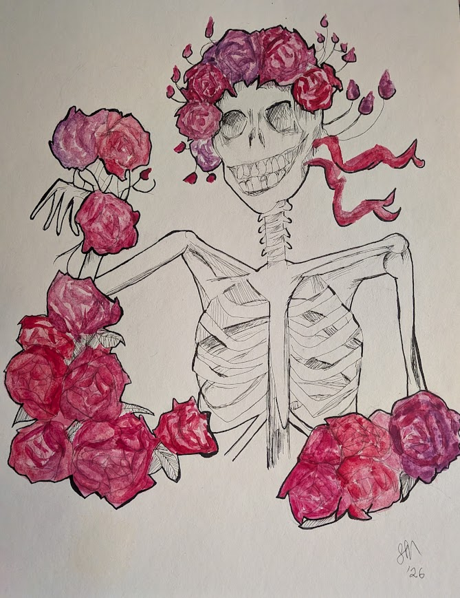

Art · Ukulele · Rubik's Cube · NYC
Making art
Ukulele & singing
Volunteering
Rubik's cube
Yoga
ASL
Keeping up with her husband on Latin & group theory
About Me
Hi! I’m Stephanie and when I’m not messing with data at work, my hobbies include:
- making art
- playing the ukulele and singing
- volunteering
- obsessing over my Rubik's cube time
- yoga
- practicing ASL
- trying to keep up with my husband intellectually as he discusses things like Latin and group theory
Below you’ll find some quick facts about me, some photos of my life, some of my artwork, and a bit more about my volunteer experience.





Volunteering
- Giving back to my community has always been incredibly important to me. I try my best to be of help wherever I can.
- Two of my favorite organizations to work with are New York Blood Center (I hit my 1-gallon milestone on February 2026!) and Columbia REAP, the ReEntry Acceleration Program that strives to improve employment opportunities for formerly incarcerated people.